汇特讯-执法记录仪
使用手册
北京七山创智科技有限公司
目录
概述说明
本文档主要是针对执法记录仪接入公网视频平台，对终端需要配置的平台的关键和终端的必要信息进行说明。便于现场使用人员快速知悉。
终端按键功能介绍
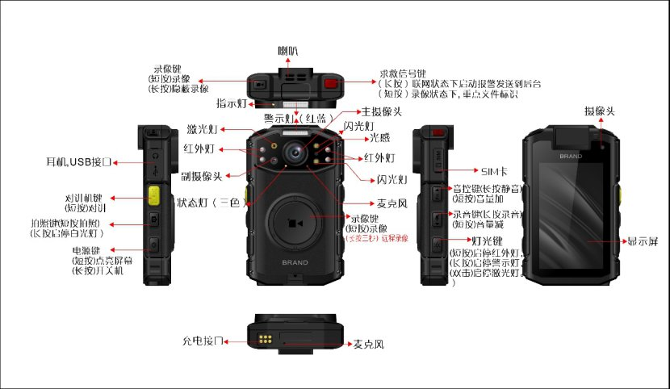
主要的功能按键包括PTT对讲键、告警键、静默键、开关机键、拍照键、录音键、录像键和灯光键。
开关机键 | 短按--点亮屏幕 | 关机状态时：无任何动作开机状态时：点亮/关闭LCD屏显示 |
长按--开关机 | 关机状态时：长按（3秒），开机开机状态时：长按（3秒），关机 | |
PTT按键 | 长按--对讲 | 不按：接听；按住：讲话 |
录像键 | 短按—本地录像 | 开机状态时：开始/停止本地录像开机且息屏状态时：点亮屏幕，同时开始本地录像录像过程中：短按拍照键拍照，录像不停止 |
录像键 | 长按三秒—远程录像 | 开机状态时：开始/停止远程录像开机且息屏状态时：点亮屏幕，同时开始本地录像录像过程中：长按三秒录像键，远程录像停止 |
告警键 | 长按--报警 | 开机状态时：长按（3秒），发送视频报警至调度台 |
静默键 | 短按--音量+ | 开机状态时：短按音量增加 |
长按--静默 | 开机状态时：长按（3秒）可关闭声音和指示灯 | |
录音键 | 短按--音量- | 开机状态时：短按音量降低 |
长按--录音 | 开机状态时：长按（3秒），开始/停止录音开机且息屏状态时：长按（3秒）点亮屏幕，并开始录音 | |
拍照键 | 短按--拍照 | 开机状态时：拍照开机且息屏状态时：点亮屏幕，同时拍照 |
拍照键 | 短按--拍照 | 开机状态时：拍照开机且息屏状态时：点亮屏幕，同时拍照 |
长按--白光灯 | 开机状态时：长按（3秒），开启/关闭白光灯 | |
灯光键 | 短按--红外灯 | 开机状态时：开始/停止红外灯开机且息屏状态时：点亮屏幕，并开始/停止红外灯 |
长按--警示灯 | 开机状态时：开始/停止警示灯开机且息屏状态时：点亮屏幕，并开始/停止警示灯 | |
双击--激光灯 | 开机状态时：开始/停止激光灯开机且息屏状态时：点亮屏幕，并开始/停止激光灯 |
终端界面显示功能
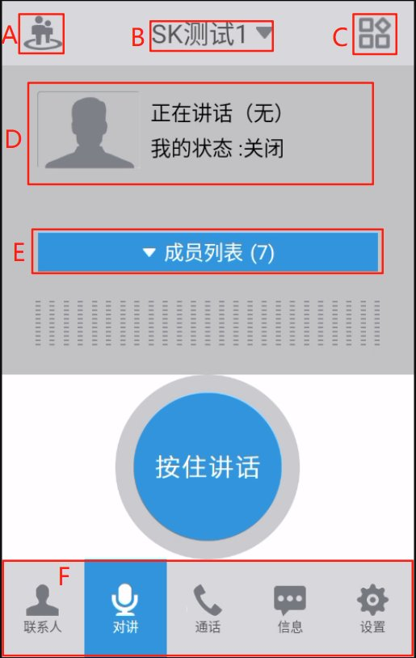
界面显示
A：终端定位 | B：当前对讲组/切换对讲组 | C：更多功能 |
D：讲话人/我的状态 | E：当前组成员列表 | F：功能导航栏 |
终端定位
点击终端定位图标。界面跳转至地图界面，可在地图界面中看到终端自身的位置与其他在线成员的位置，如下图所示。
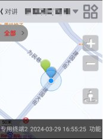
终端定位
当前对讲组/切换对讲组
终端开机后默认进入与显示默认组，点击后可展开更多对讲组进行切换。
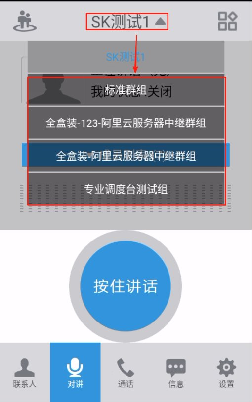
对讲组切换
更多功能
点击更多功能按钮，可弹出“创建对讲组”、“发起临时对讲”、“文件列表”三个选项；如下图所示。
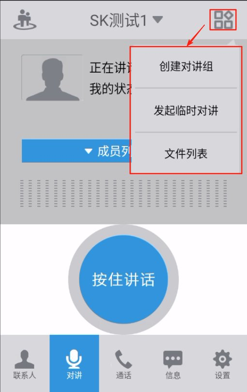
更多功能
- “创建对讲组”：该终端可创建一个固定组，填写名称后可邀请成员进入此固定组。
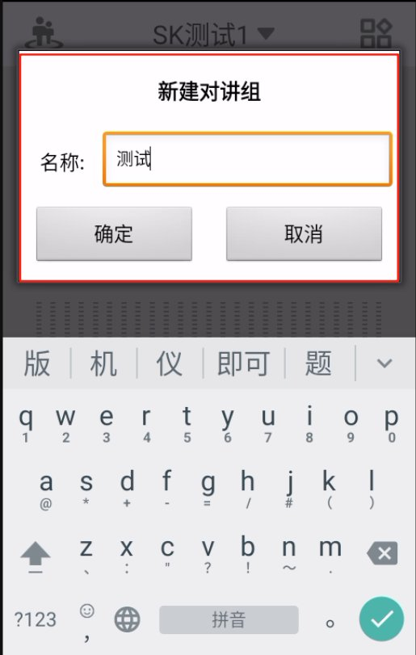
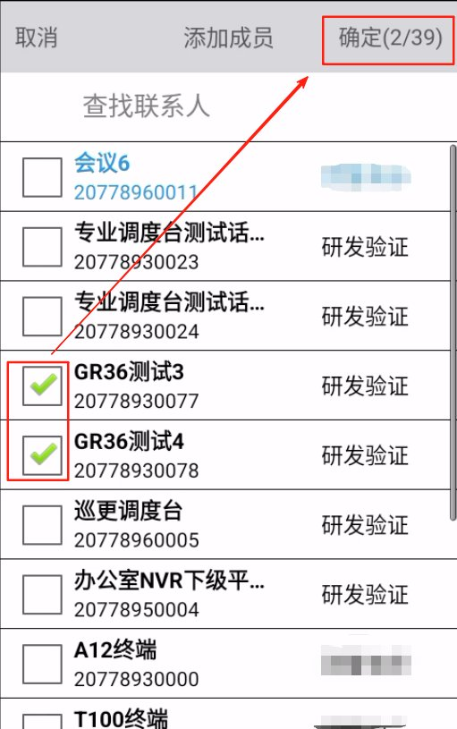
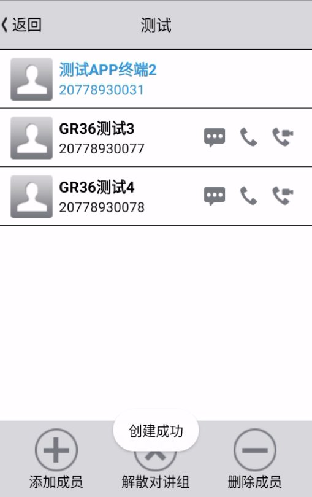
创建对讲组
- “发起临时对讲”：终端可对对讲组内目标成员发起邀请，成员接受邀请后可创建一个临时的对讲组，进行灵活对讲。
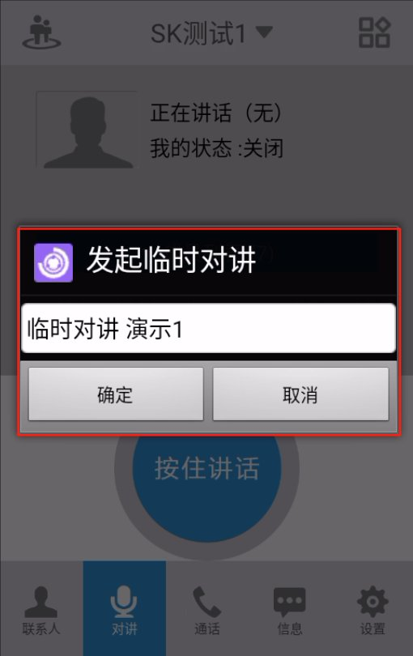
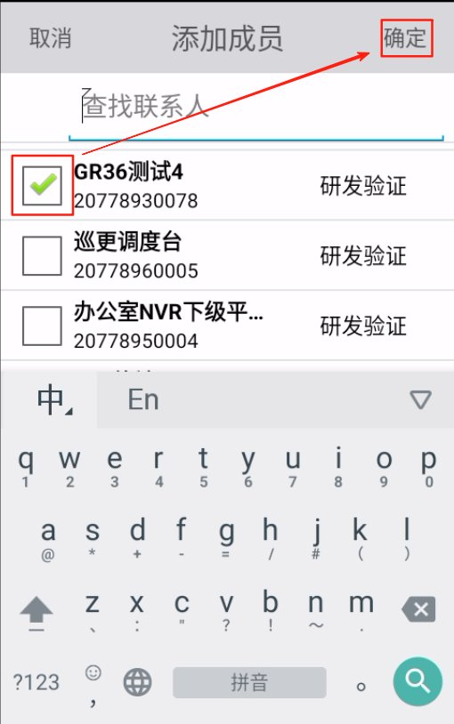
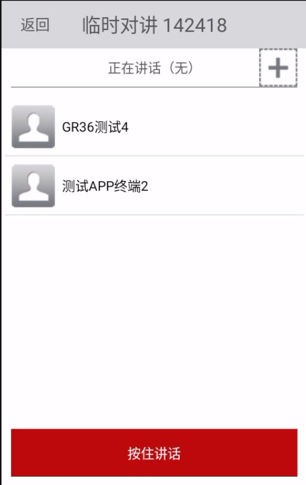
临时对讲
- “文件列表”：该终端的“拍照”、“录像视频”、“录音文件”皆保存在该文件列表中。
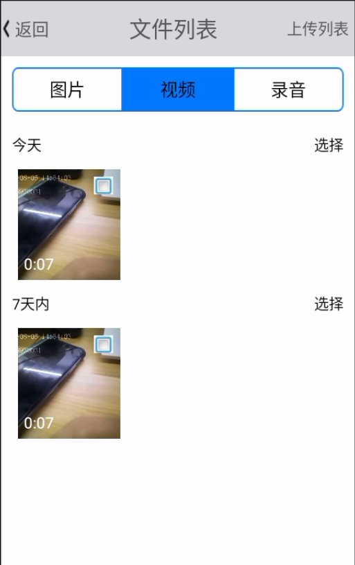
文件列表
讲话人/我的状态
当其他终端或自己讲话时，讲话人会显示当前讲话人员名称。
我的状态：分为4种，空闲、听讲、排队、讲话。
- 空闲：当前对讲组内无成员讲话，此时可以灵活进行讲话。
- 听讲：当前组内有成员进行讲话，该终端正在进行听讲此成员讲话。
- 排队：当前组内有成员进行讲话时，该终端按动PTT键对讲时，需排队等待成员讲话结束，此时状态为排队。
- 讲话：状态为讲话时，当前组成员皆可听讲该终端进行讲话。
对讲组成员列表
成员列表显示当前对讲组有多少成员，点击后可查看当前对讲组成员在线状态，也可选中当前组成员进行消息、语音通话、视频通话等操作。
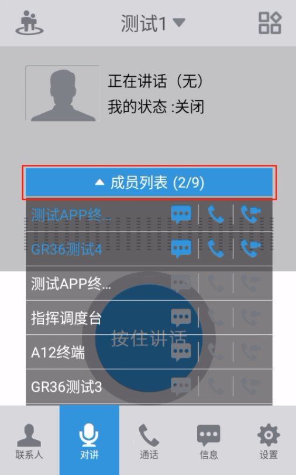
对讲组成员列表
功能导航栏
功能导航栏中可点击联系人、通话、信息功能进行界面切换。
- 联系人
用户点击联系人，可在改界面中查看企业部门通讯录与成员所在对讲组通讯录。
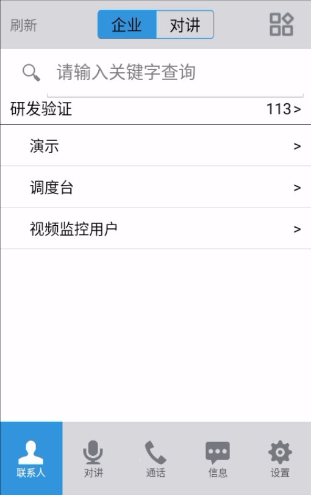
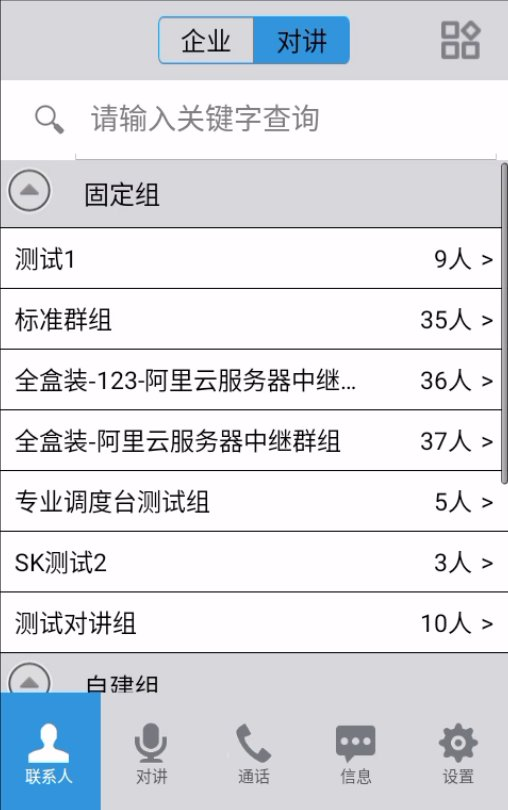
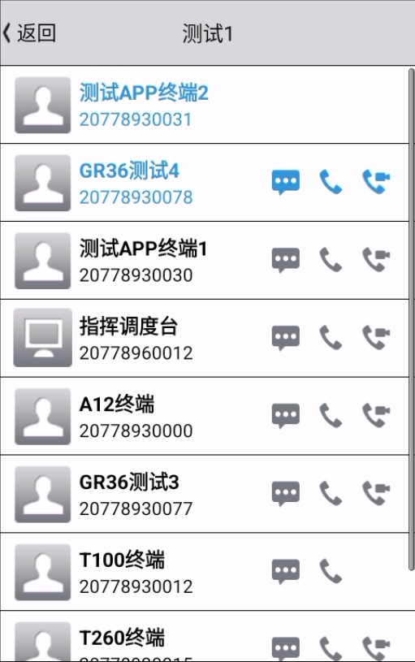
联系人列表
通讯录中可对目标成员进行彩信、语音通话、临时对讲、视频通话、视频查看等更多功能。
- 通话
通话功能中，保存终端历史通话记录，用户可在该功能中点击目标用户进行快速回拨，或输入号码进行语音、视频通话。
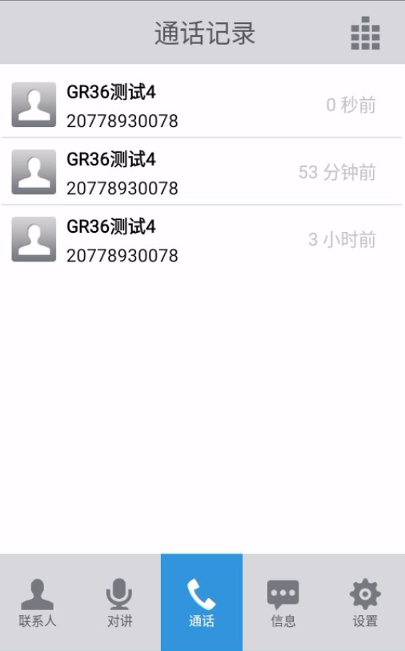
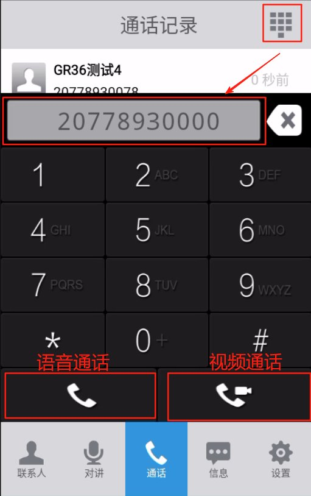
通话记录
- 信息
信息功能中，用户可查看或发送彩信给其他用户。
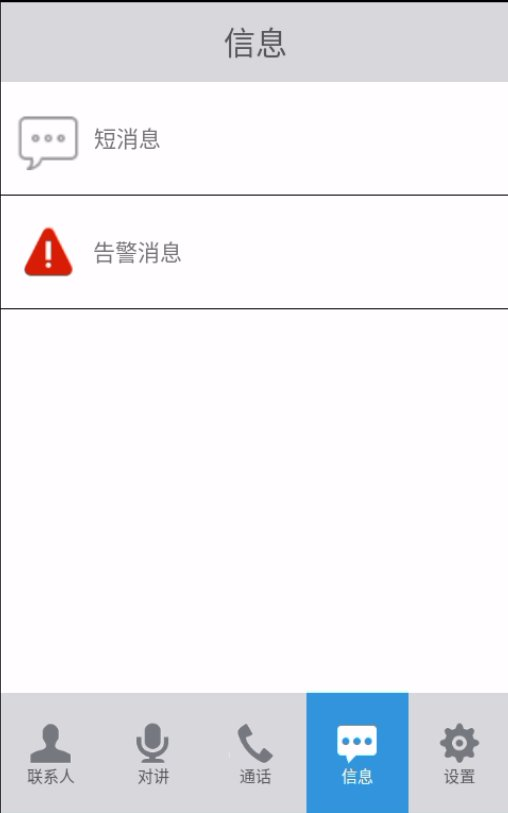
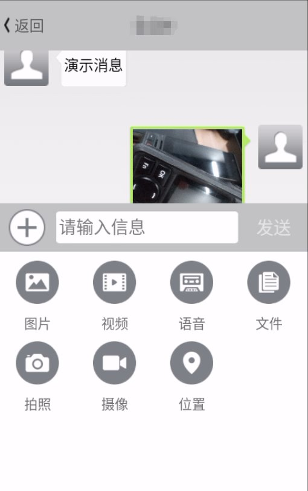
信息